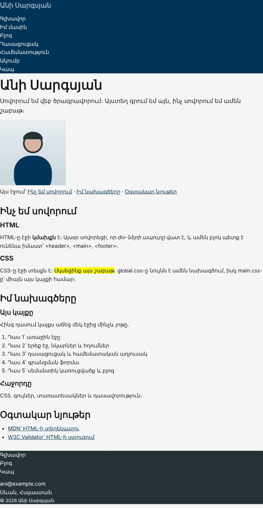
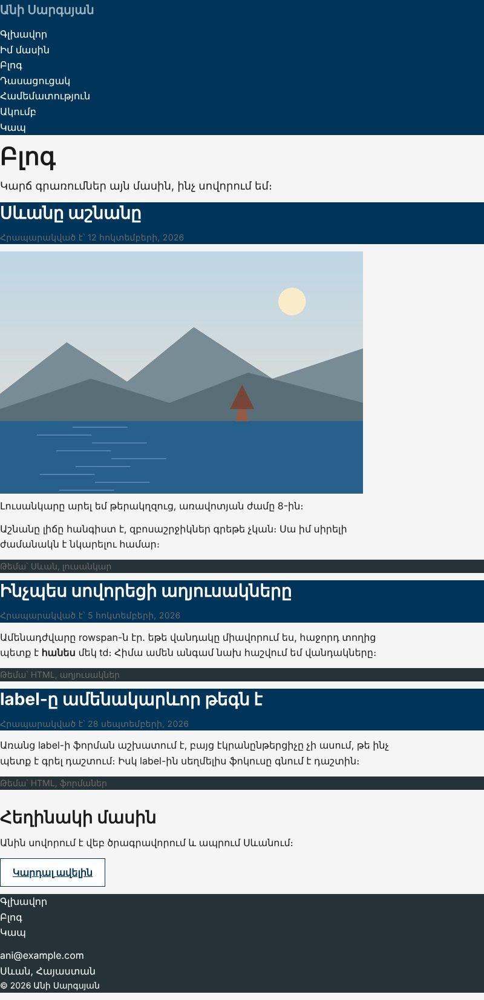

Տնային աշխատանք · HTML Դաս 07 · մինի-նախագիծ
Կայքը ստանում է հայերեն տառատեսակ, գունապնակ :root-ում, rem-ով սանդղակ և ստուգված կոնտրաստներ։
Օգտագործիր միայն Դաս 01–07-ը։ Բացակները դեռ ժամանակավոր են․ padding, margin և border-ի ամբողջական համակարգը Դաս 08-ում է։
Կայքը նույնն է, բայց հիմա ունի հայերեն տառատեսակ, գունապնակ փոփոխականներով և տառաչափերի սանդղակ։ Բոլոր տեքստերը անցնում են 4.5:1 կոնտրաստի շեմը։


Սկսիր Դաս 06-ի քո կայքից։ Եթե այն չունես, վերցրու Դաս 06-ի օրինակը։
Google Fonts-ում ընտրիր Noto Sans Armenian, միայն 400 և 700։ Պատճենիր link-երը բոլոր յոթ էջի head-ում՝ CSS ֆայլերից առաջ։
Ժամանակավորապես գրիր font-family: "Roboto"՝ առանց հայերենի։ Հայերեն տառերը կցուցադրվեն այլ տառատեսակով, որովհետև Roboto-ն դրանք չունի։ Սա է պատճառը, որ տառատեսակ ընտրելիս ստուգում ենք Language → Armenian։
/* ---------- Ֆորմայի տարրերը ժառանգում են տառատեսակը ---------- */
input, textarea, select, button {
font: inherit;
color: inherit;
}Առանց սրա ֆորմայի դաշտերը և կոճակը կմնան բրաուզերի տառատեսակով։ Ստուգիր գրանցման էջում։
Բոլոր գույները հավաքիր :root-ում՝ content.md-ի աղյուսակից։ Հետո փոխարինիր բոլոր HEX-երը var(--...)-ով։ Ֆայլում HEX պետք է մնա միայն :root-ի ներսում։
Փոխիր --secondary-ը, օրինակ՝ #5a189a։ Header-ը, վերնագրերը, կոճակները և հղումները պետք է միանգամից փոխվեն։ Եթե ինչ-որ տեղ մնաց հին կապույտը, այնտեղ HEX է մնացել։ Վերադարձրու գույնը։
DevTools-ում ընտրիր տեքստ, Styles-ում սեղմիր գույնի քառակուսուն և նայիր «Contrast ratio»-ին։ Գրիր ամեն զույգի արժեքը մեկնաբանության մեջ։
/* Կոնտրաստներ (շեմը՝ 4.5:1)
--text #1a1a1a / --bg #f5f5f5 16.0:1 ✓
--muted #6b6b6b / --bg #f5f5f5 4.9:1 ✓
--on-dark #ffffff / --secondary 12.8:1 ✓
--light #9db4c0 / --surface #ffffff 2.2:1 ✗ տեքստի համար չենք օգտագործում
*/body {
font-family: "Noto Sans Armenian", system-ui, sans-serif;
font-size: 1rem;
line-height: 1.6;
color: var(--text);
background-color: var(--bg);
}
h1 { font-size: 2.5rem; line-height: 1.15; } /* 2.5 × 16 = 40px */
h2 { font-size: 1.75rem; line-height: 1.25; } /* 1.75 × 16 = 28px */
h3 { font-size: 1.25rem; line-height: 1.3; } /* 1.25 × 16 = 20px */
h4 { font-size: 1.125rem; line-height: 1.4; } /* 1.125 × 16 = 18px */Բրաուզերի կարգավորումներում մեծացրու լռելյայն տառաչափը։ rem-ով գրված տեքստը կմեծանա, իսկ px-ով գրվածը՝ ոչ։ Վատ տեսողությամբ օգտագործողը հենց այդպես է կարդում կայքերը։
.lead-ին՝ max-width: 65ch։ Համեմատիր լայն էկրանին առանց դրա.meta՝ փոքր տառաչափ, --muted գույն, թեթև letter-spacingblockquote՝ font-style: italic.bg-dark, .bg-secondary, .bg-surface դասեր՝ ամեն մեկը իր տեքստի գույնով:root-ում, HEX չկա դրանից դուրսbody-ի line-height-ը 1.5–1.7max-width: 65ch| Սխալ | Ինչպես ուղղել |
|---|---|
| Տառատեսակը չի բեռնվում | Google Fonts-ի link-ը դրված է CSS ֆայլերից հետո կամ մոռացել ես pages/-ի էջերում |
var(--secondary)-ը չի աշխատում | Անունում սխալ կա, կամ :root-ը գրված է root՝ առանց երկու կետի |
| Ցուցակի տառերը աստիճանաբար փոքրանում են | Ներդրված ցուցակում օգտագործել ես em․ այն կուտակվում է։ Օգտագործիր rem |
Սրանք Դաս 07-ի տնային աշխատանքի կետերն են։ «մինի-նախագծում» նշվածները արդեն կատարել ես վերևի քայլերում, մնացածը կատարիր առանձին ֆայլերում կամ նույն թղթապանակում։
rgba-ի և opacity-ի տարբերությունը՝ երկու նույնական բլոկով։rem-ով՝ h1-ից h4։ Ցույց տուր հաշվարկը մեկնաբանություններում։ մինի-նախագծումpx-ով և rem-ով գրված տեքստերի պահվածքը։em-ի կուտակումը՝ երեք մակարդակ ներդրված ցուցակով, որտեղ font-size: 0.9em։max-width: 65ch հոդվածի տեքստին։ Համեմատիր առանց դրա տարբերակի հետ լայն էկրանին։ մինի-նախագծումԵրբ բաժին 03-ի բոլոր կետերը նշված են, բացիր օրինակը և քո էջը կողք կողքի։ Բացիր երկուսի կոդն էլ խմբագրիչում։ Գտիր մեկ բան, որ դու արել ես այլ կերպ, և մտածիր՝ որն է ավելի հասկանալի և ինչու։ Քո լուծումը կարող է տարբերվել և լինել ճիշտ։